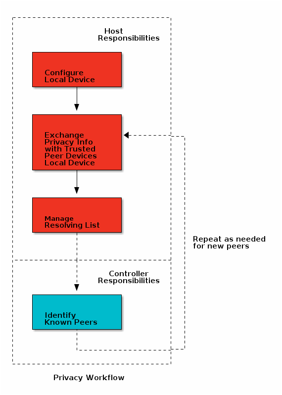

Privacy¶
The LE privacy feature allows devices to periodically generate new address to use over the air. This behavior greatly reduces the ability for a scanner to track broadcasting Bluetooth Low Energy devices over a period of time.
There are two privacy variants defined by the Bluetooth Core Specifications Version 5.3: Controller-based and Host-based. In Host-based privacy, the Host is responsible for managing all aspects of the privacy feature - generating new addresses to use and resolving private addresses sent by peers to determine their identity. In Controller-based privacy, the privacy feature is largely implemented in the Link Layer of the Controller. However, interaction with the Host is required for configuration and to manage communication with other devices using privacy.
The BLE5-Stack supports only the Controller-based privacy variant as defined by the Bluetooth Core Specifications Version 5.3 (Vol 1, Part A, Section 5.4.5). The Link Layer privacy feature is always enabled in the BLE5-Stack.
Privacy is discussed in the following sections of the Bluetooth Core Specifications Version 5.3. It is suggested to review and familiarize yourself with these sections before continuing.
Vol 1, Part A, Section 5.4.5 - Overview of the LE Privacy Feature
Vol 2, Part E, Sections 7.8 - HCI Commands
Vol 3, Part C, Section 10.7 - Privacy in the Host
Vol 3, Part C, Section 12 - GAP Service and Characteristics for GATT Server
Vol 6, Part B, Section 1.3 - Device Address
Vol 6, Part B, Section 6 - Privacy in the Link Layer
The following terms are used throughout the Privacy section. It is suggested to review these terms before continuing.
Privacy and Address Types¶
Before going too in depth into a discussion of the BLE5-Stack privacy implementation, one should have a thorough understanding about Device Address Types as defined by the Bluetooth Core Specifications Version 5.3 and how they are used by the BLE5-Stack. The section below is intended to refresh the key concepts in order to provide context for the topic of Privacy. For other important implementation details, see the Bluetooth Core Specifications Version 5.3 or the BLE5-Stack API Guide.
Device Addresses in the BLE Core Specification¶
According to the Bluetooth Core Specifications Version 5.3, all Bluetooth device addresses can be divided into two types: Public (0x00) and Random (0x01). The Random address type can be categorized into two subtypes: Static or Private. The Private address subtype can be further divided into two subtypes: Resolvable or Non-Resolvable. These divisions can be visualized with the following tree:

Public Device Address¶
Static - does not change during device lifecycle
Can be used as an Identity Address
Random Static Device Address¶
Static - does not change during device lifecycle. May change after a power cycle.
Can be used as an Identity Address
(Random) Resolvable Private Device Address (RPA)¶
Device Address changes over time
Address can be matched, or resolved, to an Identity Address for tracking by trusted peers.
(Random) Non-resolvable Private Device Address¶
Device Address changes over time
Does not provide a way to link private device address to a static address
Using Device Addresses in BLE5-Stack Applications¶
Configuring Local Device Address Mode
A BLE5-Stack application configures its own device address mode with the
addrMode parameter of GAP_DeviceInit(). This API must be called
when initializing the GAP layer and before attempting to start
discovery or advertising. See Listing 125.. It can only be
called once per device reset.
The modes that are supported by the BLE5-Stack are:
symbol |
value |
description |
ADDRMODE_PUBLIC |
0x00 |
the local device will only use a Public device address |
ADDRMODE_RANDOM |
0x01 |
the local device will only use a Random Static device address |
ADDRMODE_RP_WITH_PUBLIC_ID |
0x02 |
the local device will always use an RPA that can be resolved to a Public Identity Address. The device will only accept requests from peers who use its RPA over the air. It will not accept requests if the request is being directed to its identity address. |
ADDRMODE_RP_WITH_RANDOM_ID |
0x03 |
the local device will always use an RPA that can be resolved to a Random Static Identity Address. The device will only accept requests from peers who use its RPA over the air. It will not accept peer requests if the request is being directed to its identity address. |
A BLE5-Stack device can only change its address modes using GAP_DeviceInit. If the address mode is changed, or if a different Random Static address is used, the BLE5-Stack will erase all existing bonds and local identification information. The BLE5-Stack does not allow the user to configure the local device to use a Non-resolvable Private Address. By default, in the BLE5-Stack, a Random Static address does not change after a power cycle and its identification information is stored in NV.
The device can use the GAP_GetDevAddress() command to easily receive local address information for the device.
Configuring Local Device Address in BLE5-Stack
This section will explain how to configure the different address modes in the BLE5-stack.
ADDRMODE_PUBLIC
Simply change “Address Mode” to “Public Address” in Sysconfig or set
addrMode in GAP_DeviceInit() to ADDRMODE_PUBLIC. Then the public
address that is burned into the device will be used.
ADDRMODE_RANDOM
A valid random static address must be generated which follow the requirements in section Static device address ([Vol 6], Part B, Section 1.3.2.1) of the Bluetooth Core Specification Version 5.2. The requirements are:
The two most significant bits of the address shall be equal to 1
At least one bit of the random part of the address shall be 0
At least one bit of the random part of the address shall be 1

You can easily set the address mode with SysConfig by opening the projet .syscfg file and navigate to BLE -> General Configuration -> Address Mode. Then change the address mode and set a valid random address. The 2 Most Significant bits must be 1. On the right side in table Configure Random Static Address (ADDRMODE_RANDOM) the equivalent C code is shown, but if sysconfig is used the correct source code will be automatically generated.
SysConfig |
Application C Code |
|---|---|
uint8_t randomAddr [6] =
{0xC0, 0x11, 0x00, 0x11, 0x00, 0x11};
GAP_DeviceInit(GAP_PROFILE_PERIPHERAL,
selfEntity, addrMode,
&randomAddr);
|
{kind=link}
ADDRMODE_RP_WITH_RANDOM_ID
To use RPA that can be resolved to a Random Static Identity Address please
follow section Using Privacy in BLE5-Stack, except configure the address
as is done for ADDRMODE_RANDOM above. The pRandomAddr argument in
GAP_DeviceInit() must be set to a valid random static address.
ADDRMODE_RP_WITH_PUBLIC_ID
Use of ADDRMODE_RP_WITH_PUBLIC_ID is described in section Using Privacy in BLE5-Stack.
Interpreting Addresses in BLE5-Stack Applications
Addresses can be received in GAP & GAP Bond Manager events. Address information can also be queried using LinkDB. When receiving Peer Address information, the values will be different depending on whether or not the peer device identity information is in the Resolving List or not. The address types that may be seen for peer devices is as follows:
symbol |
value |
description |
ADDRTYPE_PUBLIC |
0x00 |
the corresponding device address is a Public address |
ADDRTYPE_RANDOM |
0x01 |
the corresponding device address is a Random address of any subtype |
ADDRTYPE_PUBLIC_ID |
0x02 |
the corresponding device address is using an RPA with a Public identity address. Receiving this type means the RPA was resolved in the Controller. |
ADDRTYPE_RANDOM_ID |
0x03 |
the corresponding device address is using an RPA with a Random Static identity address. Receiving this type means the RPA was resolved in the Controller. |
ADDRTYPE_RANDOM_NR |
0xFE |
the corresponding device address is a Random device address that was not resolved to the local address by the Controller. This type is used when receiving ADV reports for directed advertisements if the local device is configured to use an RPA. Since the address of the initiator was Random and Not Resolved, the intended target of the directed advertisement was not the local device. |
ADDRTYPE_NONE |
0xFF |
this address type is only used when reconstructing extended advertisement packets. The application does not receive this type. |
If a device adds the peer identity information to the resolving list, it will only receive the identity address in the application, not the RPA the peer is currently using.
If an RPA is received for a bonded device in an event, this means that the address is not present in the resolving list. The address can still be resolved to its identity address at the application’s discretion, but it will always receive ADDRTYPE_RANDOM when receiving messages from the Controller.
Communicating Address Information to Controller
When specifying the address type of a peer device, the GAP_Peer_Addr_Types_t
are used:
symbol |
value |
description |
PEER_ADDRTYPE_PUBLIC_OR_PUBLIC_ID |
0x00 |
the device address type as seen by the application is either a Public device address or a Public identity address |
PEER_ADDRTYPE_RANDOM_OR_RANDOM_ID |
0x01 |
the device address type as seen by the application is either a Random device address or a Random identity address |
If the application sends address type information to the Controller, it uses the above types so that the Controller can determine what to send over the air.
Resolving Private Addresses¶
The addresses we generally use in privacy discussions are RPAs and Identity Addresses. As mentioned above, a device using an RPA periodically changes the address it uses over the air. This happens at a specified timeout interval. The addresses it uses are generated with an Identity Resolving Key (IRK). This key associates the Resolvable Private Address to an Identity Address that remains constant.
The privacy feature inhibits tracking from untrusted peer devices. However, some devices may need the ability to recognize, and be recognized by, their peer devices after their RPA has changed. Since RPAs are associated with an identity address, they can be resolved to that fixed address, if a peer device has the right key.
As mentioned above, in the Controller-based privacy variant, the Controller and the Host each manage different aspects of privacy. Prior to Bluetooth Core Specification v 4.2, the Host was responsible for all aspects of privacy. The Link Layer Privacy feature was introduced in Bluetooth Core Specification 4.2. This feature hands off the repetitive work (generating & resolving addresses) to the Controller, while the Host is responsible for configuration and managing identity information.
The division of responsibilities between the Host and the Controller is depicted in the flowchart below and is covered in detail in the following sections:
Host Responsibilities¶
Exchanging Supported Privacy Feature Information¶
Any device that is operating as a Central or a Peripheral must contain the GAP Service. The GAP Service contains 2 privacy-related characteristics: the Central Address Resolution Characteristic and the Resolvable Private Address Only characteristic.
In order to use Privacy, the GAP Bond Manager requires the stack’s GATT client
to read the peer device’s GAP characteristics. In order to accomplish this, the
stack must be built with GATT_NO_CLIENT compiler option disabled so that the
GATT client is included.
See Compiler Options for more information on how to change predefined project symbols.
Alternatively, if you’re using a single-project example, the StackWrapper.a
must be replaced with StackWrapper_GattNoClient.a in the Linker file search
paths.
Central Address Resolution Characteristic (CAR)¶
Any device operating as a Central that supports the Link Layer Privacy feature must include a Central Address Resolution (CAR) Characteristic in its GAP Service. The value of this characteristic signifies whether or not the Central device can resolve its own address in the Controller. Since the Link Layer privacy feature is always enabled in the BLE5-Stack, the GAP Service implemented by the BLE5-Stack projects sets this value automatically.
Per the Bluetooth Core Specifications Version 5.3, the peripheral device must read the CAR characteristic
if it wishes to send a Directed Advertisement when it uses an RPA. The BLE5-Stack
reads this characteristic if the local device is a Peripheral that has bonded to
a peer using an RPA. This characteristic is checked by GapAdv_enable() when
attempting to send directed advertisements in the BLE5-Stack.
Resolvable Private Address Only (RPAO)
If this characteristic is present in the GAP Service and its value is ‘0’, the local device will reject any incoming requests from peers if the identity address of the local device is used over the air. The BLE5-Stack applications using Privacy will always contain the RPAO characteristic with a value of ‘0’ in their GATT Table.
The RPAO is read automatically by the GAP Bond Manager if it has bonded to a peer using a private address. If a GATT_MSG_EVENT with an ATT_READ_BY_TYPE_RSP with a value of ‘0’ is generated, then the Host sets the peer in Network Privacy mode.
However, if a GATT_MSG_EVENT response with a ATT_ERROR_RSP or a ATT_READ_BY_TYPE_RSP with a non-zero value is generated, then the Host will interact with the device in Device Privacy Mode.
Managing Identity Information¶
As mentioned above, RPAs can be associated with a long-term identity address using an IRK. During Phase 3 of the pairing process, BLE5-Stack devices using RPAs exchange their IRKs and their Identity Addresses with their peers, as described in [Vol3] Part H, Section 3.6 of the Bluetooth Core Specifications Version 5.3. From this point on, given that a peer has shared a valid, non-zero IRK and uses a Resolvable Private Address, the peer device can resolve this RPA into the associated Identity Address.
If a Peer using an RPA exchanges an IRK containing all zeros, the IRK will not be considered valid and its RPA will not be resolved. Only devices using Random Static, Public, or Non-Resolvable Private device addresses should exchange a zero-IRK.
Managing the Resolving List¶
The Host is responsible for sharing the Identity Information it has collected with the Controller for resolution purposes. It is also responsible for removing devices from the resolving list when they are no longer needed or if the Identity Information has changed.
If the Host wishes to use device filtering and still receive requests from incoming known peers who are using RPAs, it must provide the identification information to the Controller. Care should be taken in situations in which the Resolving List and the Filter Accept List are both used. If your application requires Filter Accept List filtering of devices using RPAs, please reference the Privacy and the Filter Accept List section below.
Resolving List¶
When the Link Layer Privacy feature was introduced, the Resolving List concept was also introduced. A Resolving List contains device identity information for known devices that can be used by the Link Layer to resolve RPAs in the Controller before passing events to the Host. The resolving list contents determine how the Controller and Host communicate about devices using RPAs. A Resolving List is necessary in order to use device filtering with devices using RPAs.
A resolving list record entry consists of the following:
an Identity Address
the address type of Identity Address (Public or Random Static)
the IRK used to resolve the Identity Address
which Privacy mode the device is in (Network or Device)
After bonding with a peer device, the Host can create a resolving list record entry for the device using the information shared during Phase 3 of the pairing process. This entry is added to the Resolving List which the Controller will use to process incoming RPAs. The Resolvable Private Address of a peer device is not used at the Host layer of the local device after bonding if its identity information is stored in the Resolving List. Instead, the RPA is resolved in the Controller and the Host is only given the associated peer’s Identity Address when receiving messages from the controller. In the BLE5-Stack, the GAP Bond Manager automatically adds devices to the Resolving List after bonding.
If the peer device identity information is not in the Resolving List, then the link layer may pass such link events to the host for further resolution (if Filter Accept List filtering is not used). For more information about resolving addresses in the Host, see Host Address Resolution in BLE5-Stack.
In the rare event the peer IRK is no longer valid, one of the GAPBOND_ERASE parameters can be used to erase the bond record and remove the entry from the Resolving List. If the device has been added to the Resolving List, it will be removed automatically by the GAP Bond Manager. A peer IRK will only become invalid if the peer device has reset its identity information for some reason. This does not occur during normal operation but it might happen after a power cycle, device reset to factory conditions, NV data corruption, etc.
Upon reset, the Resolving List is empty and it’s up to the host to add and remove devices from the Resolving List. This is automatically handled for the application when using the GAP Bond Manager. Devices are added to the Resolving List when a bond is added and are removed from the Resolving List when the bond is removed.
If the local device receives incoming Link Layer events from the peer device that is using a Resolvable Private Address, it will attempt to resolve the address using the known IRKs in its Resolving List to see if it matches an Identity Address.
If the Resolving List is full, the Host is responsible for determining if any of the existing Resolving List entries should be replaced if a new bond is formed. Any request from a peer using an RPA not in the resolving list will be forwarded to the Host as long as device filtering is disabled.
Resolving List Limitations¶
The BLE5-Stack has been tested & verified with a Resolving List that holds 10 entries.
Resolving Lists with sizes higher than 10 have not been extensively profiled. Potential limiting factors to Resolving List size include available Heap and resolution timing considerations: There must be enough memory to store the desired number of Resolving List entries and each entry in the resolving list increases the worst case time to resolve a private address. If it takes too long for the local device to respond, the peer may have stopped listening.
Privacy and the Filter Accept List¶
The Host also has the option to configure a filter policy in a Filter Accept List which is also in the Controller’s link layer. When enabled, policies can be set to filter out Link Layer events after they were processed by the Resolving List. This provides a way of filtering devices if you only want to communicate with certain devices at a time. The Host can update the devices in the Filter Accept List so that the Controller can automatically process future connection or scan events.
The intent for the Filter Accept List mechanism is to
reduce power consumption by filtering out undesired devices. The
Filter Accept List will prevent the Host from
receiving packets about any device not in the
Filter Accept List.
By removing undesirable Link Layer events at the Controller, the Host can
remain in low power modes. In order to take advantage of Filter Accept List filtering,
set the appropriate GapAdv and GapScan filter policies as
described in the BLE5-Stack API Guide.
The GAP Bond Manager can also be configured to have bonded device automatically added to the Controller’s Filter Accept List by setting the GAPBOND_AUTO_SYNC_WL parameter. This automatically adds the peer device Identity Address to the Filter Accept List after adding the device to the Resolving List.
When a local device receives a link layer event from a peer device, it will first check the resolving list to see if it contains an entry for the peer device before applying the Filter Accept List filter. If there is not an entry in the Resolving List, the Controller will be unable to match the RPA it received to the corresponding Identity Address information. If the Controller is unable to resolve the address, it cannot match the Random address seen over the air to the Identity Address in the Filter Accept List. That means Host will not receive information about a device using an RPA if the Identity Address is in the Filter Accept List but not the Resolving List. If you are using the GAP Bond Manager, with the GAPBOND_AUTO_SYNC_WL parameter enabled, the BLE5-Stack will automatically handle this behavior for you.
Controller Responsibilities¶
The Link Layer privacy feature was introduced to enable device filtering when RPAs are being used. This feature moved the work of generating and resolving addresses to the Controller. The Controller relies on the contents of the resolving list to interact with other private devices.
Generating Device Addresses¶
The Controller will generate the local device address. The Controller uses the local Identity Information in the Resolving List to generate its own address. The Controller uses the local device IRK and the identity address to generate the address is uses over-the-air. The RPA is generated using the Private Device Address Generation procedure detailed in [Vol 6] Part B, Section 1.3.2.2 of the Bluetooth Core Specifications Version 5.3.
The Controller regenerates the RPA device address at the time interval specified by the Host using the value of GAP_PARAM_PRIVATE_ADDR_INT. The default value recommended by the Bluetooth Core Specifications Version 5.3 is 15 minutes.
Resolving Device Addresses¶
Device addresses are used over the air in advertising channel PDUs. The address type a device is using can be read in the TxAdd and RxAdd fields. If the value is ‘0’ the device address used is understood to be a Public device address. If the value used is ‘1’ the device is understood to be using a Random address (of any subtype).
The Controller can attempt to resolve the addresses it sees Over the Air using the Private Device Address Resolution procedure detailed in [Vol 6] Part B, Section 1.3.2.3 of the Bluetooth Core Specifications Version 5.3.
Devices are resolved by using the contents of the Resolving List. When the controller receives a peer RPA, it will check the RPA against the identity information of all the peer devices that have been added to the resolving list. If it finds a match, it will check the device the device is present in the Filter Accept List (if one is being used), before sending the identity address with the correct identity address type (PUBLIC ID or RANDOM ID) to the Host.
If it doesn’t find a match in the resolving list, the Controller will check to see if a Filter Accept List is being used. If there is no Filter Accept List, or the Filter Accept List contains the peer device’s current RPA (because this may change over time, proper Filter Accept List management must be used), the Controller will use the RPA and the RANDOM address type to send the request to the Host for further processing.
If a BLE5-Stack device is using an RPA and it receives a request from a peer, it must resolve its own address before it is sure the request is for the local device. If the local device using an RPA receives a peer request that is directed to the local device’s identity address, the local device will not respond and the Controller will not send an event to the Host.
Respecting Peer Privacy¶
The Controller is responsible for maintaining the privacy of its peers who have shared their keys. This means that if a peer device has indicated it is in Network Privacy Mode (peer device GAP Service contains an RPAO characteristic with a value of ‘0’), the Controller will only send requests to the peer device using its RPA. The Controller will also not accept requests from a bonded peer that has an RPAO characteristic with a value of ‘0’ if it uses its identity address over the air.
Network Privacy Mode vs. Device Privacy Mode¶
The privacy mode a device uses is set by the Host and is part of the information stored in a resolving list entry for the device. The Host sets this mode based on the presence of the RPAO characteristic.
If the GAP Service of the peer device contains an RPAO, the Host will set the device into Network Privacy Mode and only peer requests using their RPAs will be accepted.
The BLE5-Stack will consider the other device to be in ‘device privacy mode’ if the peer device does not have an RPAO characteristic in its GAP Service or its RPAO characteristic has a non-zero value. It will accept either an Identity Address or a RPA as the peer device address.
A device can interact with a peer device exclusively in Network Privacy Mode or exclusively Device Privacy Mode, not both.
Bluetooth 5.1 Privacy Additions¶
Added to the Bluetooth Core Specifications Version 5.3 is a new change that affects privacy when using directed advertisements or forming connections using the auxiliary advertising channels while using Resolvable Private Addresses.
To summarize, whenever an AUX_CONNECT_REQ received from a device using a Resolvable Private Address and an AUX_CONNECT_RSP is generated, the Link Layer of the responding device should not set the TargetA of the AUX_CONNECT_RSP to the same value of the InitA field in the received PDU.
For more information on the specifics of this change, please refer to the Bluetooth Core Specifications Version 5.3 Vol 6, Part B. Section 6.3 Bluetooth Core Specifications Version 5.3 Vol 6, Part B. Section 6.2.4 Bluetooth Core Specifications Version 5.3 Vol 6, Part B. Section 6.2.2
Because of this change, there is the following potential impact:
1. Directed Advertising with Advertising Extensions
There is a potential compatibility issue when using privacy while forming connections over the auxilary advertising channels when using directed advertising (i.e. forming connections through the Coded PHY or the 2M PHY). This compatibility issue should not lead to a disconnection.
In order to avoid potential backwards compatibility problems with other devices
that do not support the change, it is possible to define the
DONT_TRANSMIT_NEW_RPA in the application of the BLE5-Stack project you are
using.
Using Privacy in BLE5-Stack¶
The typical privacy use case can be demonstrated using the Simple Peripheral Simple Central sample applications.
Simple Peripheral Setup¶
1. Enable the GATT client.
The application must have GATT client functionality to read the Resolvable Private Address Only characteristic and the
Central Address Resolutioncharacteristic. IfGATT_NO_CLIENTis defined in the project’s predefined symbols, remove it.See Compiler Options for more information on how to change predefined project symbols.
2. Configure Simple Peripheral device to use Resolvable Private Addresses.
Modify GAP_DeviceInit() as highlighted in Listing 125. to use a Resolvable Private Address.
static void SimplePeripheral_init(void) { ... //Initialize GAP layer for Peripheral role and register to receive GAP events GAP_DeviceInit(GAP_PROFILE_PERIPHERAL, selfEntity, ADDRMODE_RP_WITH_PUBLIC_ID, NULL); ...Optionally, add the code snippet highlighted in Listing 126. to change the timeout interval in which the controller changes its Resolvable Private Address.
static void SimplePeripheral_init(void) { ... // Configure GAP { uint16_t paramUpdateDecision = DEFAULT_PARAM_UPDATE_REQ_DECISION; uint16_t rpaTimeoutInterval = 5; // Pass all parameter update requests to the app for it to decide GAP_SetParamValue(GAP_PARAM_LINK_UPDATE_DECISION, paramUpdateDecision); GAP_SetParamValue(GAP_PARAM_PRIVATE_ADDR_INT, rpaTimeoutInterval); } ... }
3. Enable GAP Bond Manager from the stack project.
/* Include GAP Bond Manager */ -DGAP_BOND_MGR
4. Enable bonding to share your identity with trusted peer devices.
GAPBOND_BONDING_ENABLEDis a GAP Bond Manager Parameter that allows you to bond with a peer device during the pairing process. During this process, the devices share their IRKs so they can be known in the future when their RPAs change.// Request bonding (storing long-term keys for re-encryption upon subsequent // connections without repairing) uint8_t bonding = TRUE; GAPBondMgr_SetParameter(GAPBOND_BONDING_ENABLED, sizeof(uint8_t), &bonding);
5. Build the Stack Library and Application projects and flash the device.
After flashing the device, you can open a terminal using the standard COM settings: 115200, 8N1 (see Simple Peripheral README.html for more information).
The Identity Address (ID Addr) and the Resolvable Private Address currently being used (RP Addr) should display in the bottom of the Simple Peripheral terminal window.
Simple Central Setup¶
1. Enable GAP Bond Manager from the stack project.
/* Include GAP Bond Manager */ -DGAP_BOND_MGR
2. Enable bonding to share your identity with trusted peer devices.
GAPBOND_BONDING_ENABLEDis a GAP Bond Manager Parameter that allows you to bond with a peer device during the pairing process. During this process, the devices share their IRKs so they can be known in the future when their RPAs change.uint8_t pairMode = GAPBOND_PAIRING_MODE_INITIATE; // Create a bond during the pairing process uint8_t bonding = TRUE; GAPBondMgr_SetParameter(GAPBOND_PAIRING_MODE, sizeof(uint8_t), &pairMode); GAPBondMgr_SetParameter(GAPBOND_BONDING_ENABLED, sizeof(uint8_t), &bonding);
3. Build the Stack Library and Application projects and flash the device.
After flashing the device, you can open a terminal using the standard COM settings: 115200, 8N1 (see Simple Central README.html for more information).
Note
The out of box simple_central examples already implements logging peer’s address when the link established and when it’s bonded.
Demonstrating Privacy¶
1. Simple Central Scan for Simple Peripheral Device.
Use Simple Central to scan for Simple Peripheral using the two button menu. Simple Peripheral will be advertising using the RPA displayed in its terminal window. In the terminal from Simple Central, you can see the RPA from the Simple Peripheral.
2. Simple Central Connect to Simple Peripheral Device.
Once you find Simple Peripheral’s RPA, then connect to it. When the link established, the terminal will print out the RPA of Simple Peripheral and after the bond is saved in the SNV, the terminal will print out Simple Peripheral’s ID address.
3. Disconnect and Scan and reconnect again
Disconnect from Simple Peripheral. Use the two button menu to rediscover peer devices. Now you will see Simple Peripheral’s ID Address in the dicovered device list instead of its RPA. That means Simple Central already resolve the address when it scans.
Host Address Resolution in BLE5-Stack¶
Address Resolution in the Controller using the Resolving List is the recommended usage of the Privacy feature in the BLE5-Stack. However, in some cases, due to Resolving List size limitations or other application specific reasons, an RPA may need to be resolved in the Host. An RPA can be resolved to its Identity Address in the Host (if a valid IRK exists in the bond record) by using the GAPBondMgr_FindAddr(). This API takes an address and searches the bond records for the associated identity address.
If a peer device is using an RPA that has not been added to the Resolving List, the Host should refer only to connection handles and the RPA used by the peer device when communicating with the Controller.
The number of addresses that can be resolved by the Host is limited to the number of bond records you can store. However, the time it takes to resolve an address will increase as more bond records are stored. This may mean that the address isn’t resolved immediately upon connection. Another disadvantage to Host-based resolving is that you cannot take advantage of device filtering in the Controller using the Filter Accept List because every unknown device using an RPA needs to be forwarded to the Host.
1. Test Normal Privacy Use Case using steps listed in Using Privacy in BLE5-Stack
Follow the steps above to properly configure Simple Central and Simple Peripheral for privacy and bonding.
2. Resolve Private Address to Identity Address using GAP Bond Manager
An unresolved RPA could mean that the bond record has been removed or that the peer device is using a new IRK that has not been exchanged. In order to determine whether the bond record is still accurate, we can try to resolve the address from the bond records we have stored. This is done by sending the GAPBondMgr_FindAddr() command with the peerAddressType set to
PEER_ADDRTYPE_RANDOM_OR_RANDOM_IDand the address from the Slave BDA in the Connection Info (Hint: To save from manual input errors, this address can be copied & pasted directly by right-clicking on the Slave BDA field and selecting “Copy Address” then pasting into the address field of the GAPBondMgr_FindAddr() command).If a valid IRK exists in the Bond Record, the results of the GAPBondMgr_FindAddr() command will be returned in an event showing the Identity Address and the Identity Address type of the resolved peer device. It is then up to the user to manage the resolved addresses for use in their application.